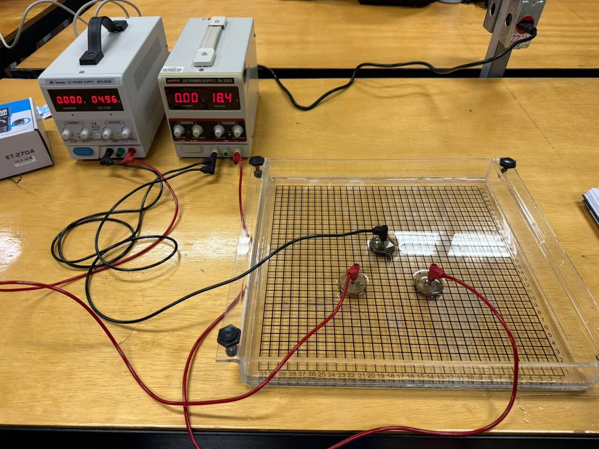
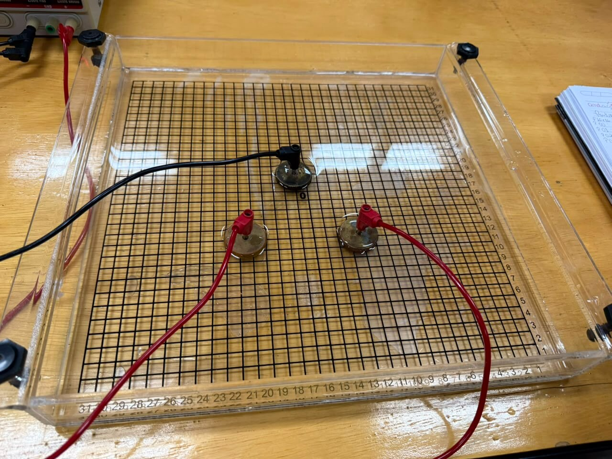

Varra uma malha ponto a ponto ao redor de três eletrodos mantidos em
0 V, 5 V e 10 V, desenhe as equipotenciais e recupere o campo
elétrico a partir do gradiente do potencial.
Física III
três eletrodos cilíndricos
mapa bidimensional
\(\vec E=-\nabla V\)
Montagem
A geometria precisa ser registrada antes da água e dos cabos: as
coordenadas dos centros e a fronteira da região medida fazem parte
dos dados brutos.
Objetivos de aprendizagem
medir o potencial elétrico \(V(x,y)\) em uma malha regular;
reconhecer o potencial como campo escalar e o campo elétrico como seu gradiente negativo;
construir curvas equipotenciais por interpolação entre dados medidos;
verificar a perpendicularidade entre \(\vec E\) e as equipotenciais;
testar a propriedade do valor médio associada à equação de Laplace;
avaliar efeitos de borda, polarização e resolução espacial.
Material utilizado
cuba acrílica com malha cartesiana no fundo;
solução condutora fornecida pelo professor;
três eletrodos cilíndricos iguais com bornes;
duas saídas CC ajustáveis, isoladas ou aprovadas para referência comum;
multímetro digital na função voltímetro CC;
ponta de prova móvel, cabos banana e régua;
folha quadriculada ou planilha para a matriz completa \(V(x,y)\).

Visão geral do equipamento. Os displays fotografados não são
os valores prescritos: ajuste e confirme 0 V, 5 V e 10 V
conforme este roteiro. Fotografia: acervo da disciplina.

Vista superior para registrar os centros na malha. A separação
mínima é verificada entre cada par de eletrodos.
Fotografia: acervo da disciplina.
Previsão obrigatória antes de energizar.
Em uma cópia da malha, marque os três cilindros e esboce qualitativamente
as curvas de 1 V a 9 V. Indique onde você espera maior espaçamento entre
equipotenciais, onde espera maior módulo de \(\vec E\) e em que sentido
o campo deve apontar. Preserve o desenho original para compará-lo com o
mapa medido.
1. Posicione os três eletrodos
Escolha três cruzamentos da malha e coloque o centro de cada
cilindro exatamente sobre um cruzamento. Forme um triângulo não
degenerado: os centros não podem ficar sobre uma mesma reta.
Defina \(\Delta\) como a distância entre dois traços consecutivos.
Para cada par de eletrodos, conte os intervalos e
confirme a separação centro a centro
\(d_{ij}\geq 7\Delta\). Conte espaços, não o número de linhas
atravessadas.
Atribua e identifique os potenciais de fronteira: eletrodo
\(E_0=0\,\mathrm{V}\) (ground, ou terra de referência),
\(E_5=5\,\mathrm{V}\) e
\(E_{10}=10\,\mathrm{V}\). Registre as três coordenadas impressas
na cuba e não mova os cilindros depois disso.
Adicione a solução até que as bases dos três cilindros estejam
igualmente imersas. Aguarde a superfície parar de oscilar antes de
medir.
2. Delimite o quadrado obrigatório de varredura
Desenhe na folha de dados o menor quadrado alinhado à
malha que contém os três centros e ainda deixa pelo menos
duas divisões completas para fora deles em cima, embaixo, à esquerda
e à direita. Se a extensão horizontal e a vertical forem diferentes,
amplie a menor delas, distribuindo as divisões extras entre os dois
lados, até obter o mesmo número \(N\) de intervalos em ambas.
\[
N \geq \max\!\left(
x_{\max}-x_{\min},\,
y_{\max}-y_{\min}
\right)+4
\]
As coordenadas são contadas em divisões da malha. O termo \(+4\)
representa duas divisões antes e duas depois. A condição efetiva é:
cada eletrodo precisa ficar a pelo menos \(2\Delta\) da borda do
quadrado.
Entre eletrodos\(d_{01},d_{05},d_{5,10}\geq 7\Delta\)
Margem externapelo menos \(2\Delta\) em cada lado
Coberturatodos os cruzamentos do quadrado
Regra operacional: o contorno tracejado é a fronteira do conjunto de
dados. Meça todos os cruzamentos, inclusive os que ficam fora do
triângulo dos eletrodos. Nos pontos cobertos pelo metal, registre a
condição de fronteira do eletrodo em vez de introduzir a ponta.
3. Ligue 0 V, 5 V e 10 V
Com as saídas desligadas, escolha o eletrodo \(E_0\) como referência comum de 0 V.
Ligue o negativo/comum das saídas aprovadas ao mesmo \(E_0\). Não faça essa união se o professor não tiver confirmado a compatibilidade das fontes.
Ligue uma saída positiva a \(E_5\) e ajuste-a para \(5{,}00\,\mathrm{V}\) em relação a \(E_0\).
Ligue a outra saída positiva a \(E_{10}\) e ajuste-a para \(10{,}00\,\mathrm{V}\) em relação a \(E_0\).
Conecte o terminal COM do voltímetro a \(E_0\). A ponta positiva será a sonda móvel.
Meça diretamente nos três bornes e registre \(V_0\), \(V_5\) e \(V_{10}\) reais antes da varredura.
4. Varra todos os pontos
Comece em um canto do quadrado e percorra a primeira linha sem saltar cruzamentos.
Na linha seguinte, inverta o sentido e continue, realizando uma varredura em serpentina para reduzir erros de coordenada.
Em cada cruzamento, mantenha a ponta vertical, na mesma profundidade e sem raspar a malha ou tocar um eletrodo.
Aguarde a leitura estabilizar e registre \(x\), \(y\) e \(V\) com todas as casas mostradas.
Marque imediatamente pontos bloqueados pelo metal como \(E_0\), \(E_5\) ou \(E_{10}\); eles não são dados ausentes.
Ao terminar cada linha, confira a quantidade de leituras: devem existir \(N+1\) posições.
No fim, repita cinco pontos distribuídos pela região e torne a medir os três potenciais dos eletrodos.
Fundamentos
A cuba transforma um problema de fronteira bidimensional em um mapa
mensurável: os cilindros fixam valores de \(V\), e a solução condutora
estabelece o potencial nos pontos intermediários.
Potencial e condições de fronteira
Em regime estacionário, a corrente na solução obedece
\(\vec J=\sigma\vec E\). Para condutividade aproximadamente
uniforme e sem fontes volumétricas entre os eletrodos,
\(\nabla\cdot\vec J=0\). Como \(\vec E=-\nabla V\), resulta:
Os três cilindros impõem condições de Dirichlet:
\(V(E_0)=0\,\mathrm{V}\), \(V(E_5)=5\,\mathrm{V}\) e
\(V(E_{10})=10\,\mathrm{V}\). A parede finita da cuba também
influencia a solução; por isso a margem externa precisa ser medida.
Do mapa de potencial ao campo
O campo aponta para a direção em que o potencial diminui mais
rapidamente. Em uma malha de passo físico \(\Delta\), as diferenças
centrais fornecem uma estimativa no ponto \((i,j)\):
Use \(\Delta\) em metros para obter \(\mathrm{V/m}\). Nas bordas do
quadrado, diferenças progressivas ou regressivas substituem a forma
central, com menor precisão.
Equipotenciais e direção de \(\vec E\)
Sobre uma equipotencial, \(dV=0\). Como
\(dV=-\vec E\cdot d\vec\ell\), o deslocamento tangente à curva é
perpendicular ao campo:
Curvas próximas indicam variação rápida de \(V\) e campo intenso.
As linhas de campo devem sair das vizinhanças de maior potencial e
chegar às de menor potencial, cruzando as equipotenciais a
aproximadamente \(90^\circ\).
Teste discreto de Laplace
Em uma malha quadrada, um ponto interior que não toca os eletrodos
deve ter potencial próximo da média dos quatro vizinhos:
Um \(r_L\) pequeno em comparação com a resolução e a repetibilidade
das leituras é evidência de consistência local; ele não prova que
toda a malha está livre de erro sistemático.
O que o modelo ideal não inclui.
A cuba tem profundidade finita, paredes isolantes, cilindros de raio não
nulo e solução cuja condutividade pode mudar com temperatura,
concentração, eletrólise e polarização. A leitura do voltímetro também
representa uma pequena região ao redor da ponta, não um ponto
matemático. Esses efeitos devem aparecer na discussão.
Dados
O conjunto principal não é uma amostra esparsa: é a matriz completa
de potenciais em todos os cruzamentos do quadrado definido na
montagem.
Tabela 1 — geometria e potenciais de fronteira
Eletrodo
x (divisões)
y (divisões)
V inicial (V)
V final (V)
\(E_0\)
\(E_5\)
\(E_{10}\)
Registre também \(\Delta=\) ______ cm,
\(d_{01}=\) ______ divisões,
\(d_{05}=\) ______ divisões e
\(d_{5,10}=\) ______ divisões.
Tabela 2 — fronteira do quadrado
Limite
Coordenada
Margem até o eletrodo mais próximo
\(x_\text{esq}\)
\(x_\text{dir}\)
\(y_\text{inf}\)
\(y_\text{sup}\)
Número de intervalos por lado: \(N=\) ______. Número esperado de
cruzamentos: \((N+1)^2=\) ______.
Tabela 3 — controle de cobertura
Categoria
Quantidade
Observação
Cruzamentos esperados
\((N+1)^2\)
Leituras realizadas
Pontos sob eletrodos
condição de fronteira
Pontos ausentes
deve ser zero
Pontos repetidos
5
controle de deriva
Matriz principal \(V(x,y)\)
Construa uma matriz com uma linha para cada \(y\) e uma coluna para
cada \(x\) do quadrado. Cada célula deve conter a tensão medida em
volts. Não use interpolação para preencher pontos esquecidos; volte à
cuba e meça. A interpolação será usada somente depois, para desenhar
as equipotenciais entre cruzamentos medidos.
y \ x
\(x_0\)
\(x_1\)
\(x_2\)
…
\(x_N\)
\(y_N\)
…
⋮
⋮
⋮
⋮
⋱
⋮
\(y_2\)
…
\(y_1\)
…
\(y_0\)
…
Entregue a matriz completa como folha anexada, arquivo CSV ou
planilha. Um formato longo equivalente usa uma linha por leitura:
x, y, V, status, ordem_de_medida.
Tratamento obrigatório
Confirme a cobertura: pontos ausentes devem ser zero, exceto posições explicitamente marcadas como eletrodo.
Calcule a deriva de \(V_0\), \(V_5\) e \(V_{10}\) entre início e fim.
Compare as cinco repetições com suas leituras originais e estime a repetibilidade.
Trace equipotenciais de 1 V a 9 V por interpolação linear entre cruzamentos vizinhos.
Escolha pelo menos oito pontos internos e calcule \(E_x\), \(E_y\) e \(|\vec E|\).
Desenhe vetores de campo sobre o mapa, com escala declarada, e verifique o cruzamento perpendicular.
Em pelo menos dez pontos afastados dos cilindros, calcule o resíduo \(r_L\).
Gráficos e evidências
mapa da malha com posição e potencial dos três cilindros;
mapa de cores ou superfície \(V(x,y)\);
curvas equipotenciais identificadas em volts;
vetores de \(\vec E\) em pontos selecionados;
tabela dos resíduos de Laplace;
histograma ou resumo das diferenças dos cinco pontos repetidos;
fotografia ou desenho fiel da montagem final.
Incerteza e controle de qualidade
Registre resolução e exatidão do voltímetro, passo físico
\(\Delta\), oscilação da leitura e variação dos potenciais das fontes.
Mantenha a ponta na mesma profundidade e posição relativa ao
cruzamento. Discuta ainda paralaxe, espessura da ponta, raio dos
cilindros, nível da solução, bordas da cuba, deriva temporal,
polarização e qualquer bolha observada. Uma matriz numerosa não
compensa um erro sistemático repetido em todos os pontos.
Relatório
Entregue o mapa completo, não apenas curvas escolhidas. O arquivo
relatorio.md contém o modelo acadêmico e os critérios de
análise.
Ao imprimir, somente esta aba e o relatório completo serão incluídos.
Curso/turma:
Data:
Grupo:
Integrantes:
Geometria e hipótese
Registre as coordenadas dos eletrodos, as três separações, o
quadrado medido e o esboço previsto antes da energização.
Dados brutos completos
Anexe a matriz \(V(x,y)\), identifique os pontos sob os cilindros
e demonstre que não há cruzamentos internos esquecidos.
Equipotenciais e campo
Apresente o mapa de cores, as equipotenciais de 1 V a 9 V e os
vetores calculados por diferenças finitas.
Teste de Laplace
Calcule \(r_L\) em dez pontos, compare-o com a repetibilidade e
discuta onde o modelo falha mais.
Incertezas
Separe limitações do instrumento, posicionamento, geometria,
solução, fontes, bordas, polarização e ordem temporal da coleta.
Conclusão
Responda se os dados sustentam \(\vec E=-\nabla V\), a
perpendicularidade e o comportamento harmônico de \(V\).
Checklist de entrega
□ três separações centro a centro de pelo menos sete divisões;
□ quadrado com margem mínima de duas divisões nos quatro lados;
□ matriz completa de todos os cruzamentos;
□ valores reais dos três eletrodos no início e no fim;
□ mapa de cores e equipotenciais de 1 V a 9 V;
□ oito ou mais vetores de campo calculados;
□ teste de Laplace em dez pontos;
□ análise de repetibilidade, deriva e demais incertezas;